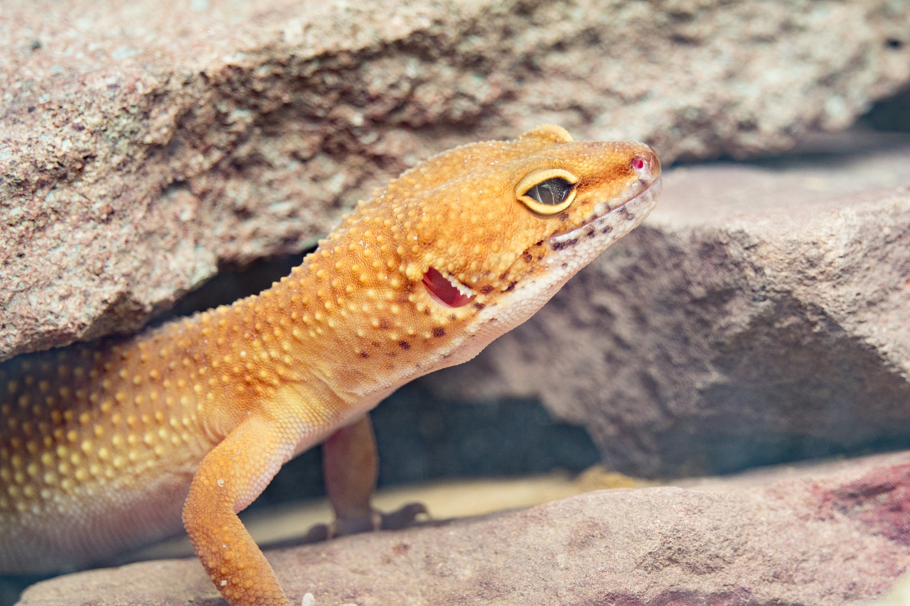

Vanilla
terra
strona główna
gady
hodowcy
kontakt
eublefar lamparci
brodatka środkowoaustralijka

Vanilla Terra to strona internetowa gdzie dziele się moją wiedzą na temat terrarystyki i moimi własnymi doświadczeniami.
na razie sa tylko podstawowe informację ale strona będzie ciągle rozwijana o nowe informacje.
Gdy tylko dowien się czegoś nowego to od razu dodam te informacje w to miejsce gdzie będę chciał żeby była cała moja wiedza.